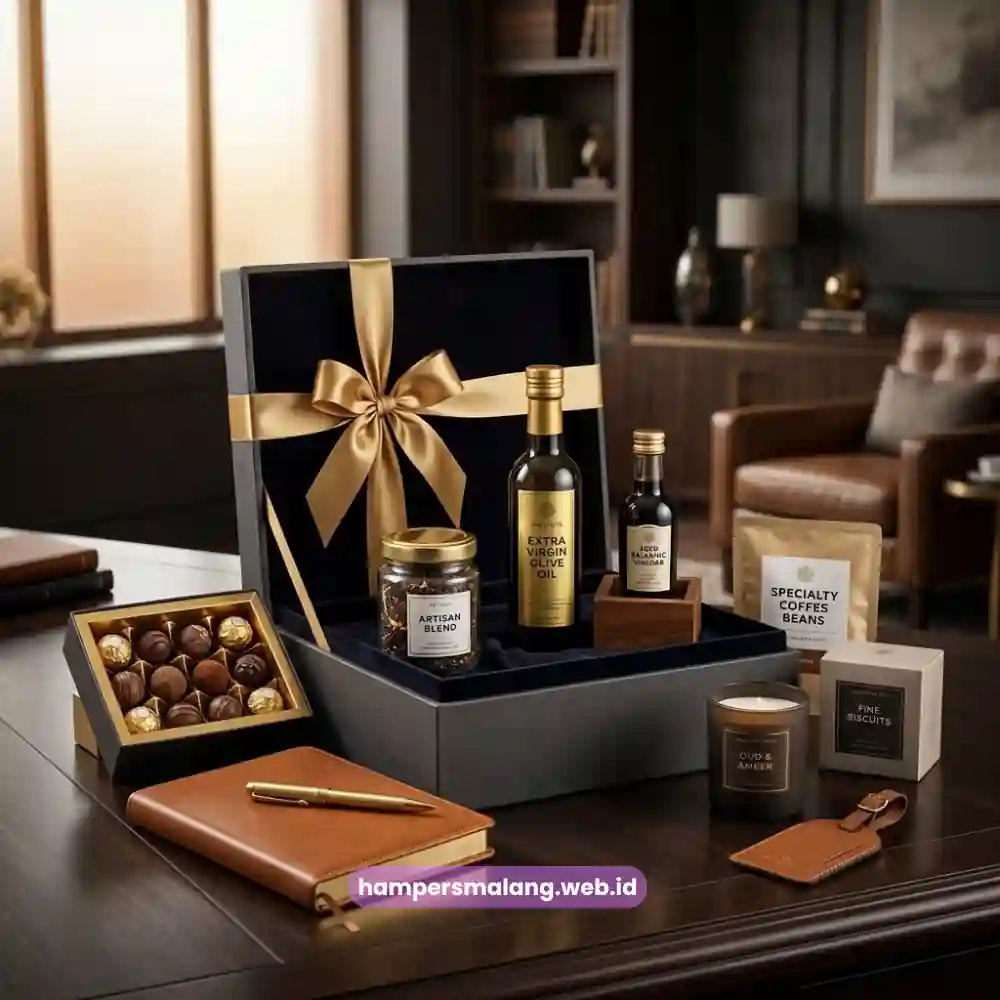

Bagaimana cara memilih hampers ucapan terima kasih untuk klien yang benar-benar berkesan? Jawabannya terletak pada tiga hal: kualitas isi hampers, kemasan yang mencerminkan citra perusahaan, dan ketepatan momen pengiriman.
Hampers yang dirancang dengan memperhatikan ketiga aspek tersebut tidak hanya menyampaikan rasa terima kasih, tetapi juga memperkuat hubungan bisnis jangka panjang dengan klien.
Di tengah persaingan bisnis yang semakin ketat, cara sebuah perusahaan memperlakukan kliennya sering kali menjadi pembeda yang tidak terlihat di atas kertas namun sangat terasa dalam relasi jangka panjang.
Ucapan terima kasih yang disampaikan lewat kata-kata mudah dilupakan, tetapi hampers yang dikemas dengan baik akan diingat, difoto, bahkan dipajang di ruang kerja klien.
Inilah alasan mengapa semakin banyak perusahaan di Indonesia menjadikan hampers korporat sebagai bagian resmi dari strategi customer relationship mereka.
- Hampers ucapan terima kasih klien berfungsi sebagai representasi citra profesional perusahaan.
- Pemilihan isi hampers sebaiknya disesuaikan dengan segmen dan preferensi klien.
- Kemasan dan personalisasi menjadi faktor penentu kesan pertama yang tercipta.
- Ketepatan waktu pengiriman memengaruhi seberapa besar dampak apresiasi yang dirasakan klien.
- Hampers Malang menyediakan layanan hampers korporat yang dapat disesuaikan dengan kebutuhan dan anggaran perusahaan.
Mengapa Hampers Menjadi Pilihan Ucapan Terima Kasih yang Efektif untuk Klien?
Hampers dianggap efektif karena menggabungkan nilai fungsional dan nilai emosional dalam satu paket yang dapat dirasakan langsung oleh penerima.
Berbeda dengan ucapan verbal atau surat formal, hampers memberikan pengalaman nyata yang dapat disentuh, digunakan, dan dikenang.
Riset dari berbagai lembaga pemasaran korporat secara konsisten menunjukkan bahwa pemberian hadiah fisik meningkatkan persepsi klien terhadap kepedulian sebuah perusahaan.
Sebuah survei industri corporate gifting pada 2023 mencatat bahwa lebih dari 80 persen profesional menilai hadiah bisnis yang dipersonalisasi berkontribusi terhadap loyalitas jangka panjang terhadap mitra kerja.
Data lain dari laporan tren corporate gifting tahun yang sama menunjukkan bahwa perusahaan yang rutin mengirimkan hampers apresiasi mengalami peningkatan tingkat retensi klien dibandingkan yang tidak melakukannya sama sekali.
Bagi perusahaan, hampers juga berfungsi sebagai media branding yang halus. Setiap elemen, mulai dari pemilihan produk, warna kemasan, hingga kartu ucapan, dapat dirancang untuk mencerminkan identitas merek sekaligus menyampaikan pesan bahwa hubungan dengan klien tersebut dihargai secara serius.
Baca Juga: 9 Ide Hampers Relasi Bisnis yang Elegan dan Profesional
Kapan Waktu yang Tepat Mengirim Hampers kepada Klien?
Waktu pengiriman hampers sebaiknya disesuaikan dengan momen yang relevan agar pesan apresiasi terasa tulus dan tidak sekadar formalitas.
Beberapa momen yang paling umum digunakan perusahaan antara lain penyelesaian proyek besar, perpanjangan kontrak kerja sama, hari raya keagamaan, ulang tahun perusahaan klien, serta akhir tahun sebagai bentuk refleksi kerja sama sepanjang periode tersebut.
Pengiriman hampers yang terlalu sering tanpa alasan jelas justru dapat mengurangi makna dari apresiasi itu sendiri.
Sebaliknya, hampers yang dikirim tepat pada momen bermakna akan memperkuat kesan bahwa perusahaan benar-benar memperhatikan perjalanan kerja sama dengan klien tersebut, bukan sekadar menjalankan rutinitas administratif.
Apa Saja Isi Hampers yang Cocok untuk Klien Korporat?
Isi hampers yang ideal untuk klien korporat umumnya mengombinasikan produk premium yang bersifat universal dengan sentuhan personalisasi yang relevan dengan profil penerima.
Kombinasi ini penting agar hampers tetap terasa mewah namun tidak berkesan berlebihan atau tidak tepat sasaran.
Beberapa kategori produk yang sering digunakan dalam hampers klien antara lain makanan dan minuman premium seperti cokelat kualitas tinggi, kopi atau teh pilihan, serta camilan sehat kemasan elegan.
Selain itu, perlengkapan kerja bernuansa eksekutif seperti notebook kulit, alat tulis premium, dan tumbler berkualitas juga menjadi favorit karena fungsional dan dapat digunakan sehari-hari di lingkungan kerja klien.

Faktor yang perlu diperhatikan dalam menentukan isi hampers adalah kesesuaian dengan budaya perusahaan klien, batasan diet atau preferensi tertentu, serta nilai produk yang proporsional dengan skala hubungan bisnis yang terjalin.
Hampers yang terlalu sederhana dapat terkesan kurang menghargai, sementara hampers yang berlebihan justru berpotensi menimbulkan kesan tidak profesional pada beberapa institusi, terutama instansi pemerintah atau BUMN yang memiliki kebijakan gratifikasi ketat.
Bagaimana Kemasan Memengaruhi Kesan Pertama Hampers?
Kemasan adalah elemen pertama yang dilihat klien sebelum membuka isi hampers, sehingga perannya sangat menentukan persepsi awal terhadap kualitas dan keseriusan perusahaan pengirim.
Kemasan yang rapi, menggunakan material berkualitas, serta dipadukan dengan warna dan desain yang konsisten dengan identitas merek akan memberikan kesan profesional sejak detik pertama.
Personalisasi seperti penambahan logo perusahaan, kartu ucapan dengan pesan yang ditulis khusus, atau pita dengan warna korporat dapat meningkatkan nilai emosional hampers tanpa harus menambah biaya produk secara signifikan.
Detail kecil semacam ini sering kali menjadi pembeda antara hampers yang terasa generik dengan hampers yang benar-benar dirancang khusus untuk klien tertentu.
Baca Juga: Kapan Waktu Tepat Memberikan Hampers untuk Relasi Bisnis?
Apa Manfaat Jangka Panjang dari Pemberian Hampers kepada Klien?
Manfaat jangka panjang dari pemberian hampers klien tidak hanya terbatas pada kesan baik sesaat, tetapi juga berkontribusi pada penguatan reputasi dan loyalitas bisnis secara berkelanjutan.
Klien yang merasa dihargai cenderung lebih terbuka untuk melanjutkan kerja sama, memberikan referensi kepada mitra lain, serta lebih toleran ketika terjadi kendala kecil dalam proses kerja.
Selain itu, hampers yang konsisten dikirimkan pada momen yang tepat turut membangun citra perusahaan sebagai organisasi yang mengedepankan relasi manusiawi, bukan semata transaksi bisnis.
Dalam jangka panjang, pendekatan ini dapat menjadi nilai tambah kompetitif yang sulit ditiru oleh kompetitor yang hanya berfokus pada aspek harga atau kualitas produk semata.
Kesalahan Umum yang Perlu Dihindari saat Memilih Hampers Klien
Beberapa kesalahan umum kerap terjadi saat perusahaan menyiapkan hampers untuk klien, di antaranya adalah memilih produk yang terlalu umum tanpa mempertimbangkan profil penerima, mengabaikan kualitas kemasan demi menekan biaya, serta mengirimkan hampers pada waktu yang kurang tepat sehingga kehilangan momentum apresiasi.
Kesalahan lain yang cukup sering ditemui adalah tidak menyertakan kartu ucapan personal, sehingga hampers terasa seperti produk massal tanpa sentuhan khusus.
Selain itu, banyak perusahaan tidak memperhitungkan kebijakan internal klien terkait penerimaan hadiah, terutama untuk instansi dengan regulasi ketat, sehingga hampers yang dikirim berpotensi menimbulkan masalah etika alih-alih apresiasi.
Bagaimana Cara Memesan Hampers Ucapan Terima Kasih untuk Klien?
Proses pemesanan hampers klien idealnya dimulai dengan menentukan tujuan pengiriman, profil klien, serta anggaran yang tersedia.
Setelah itu, perusahaan dapat berkonsultasi mengenai pilihan produk, konsep kemasan, hingga jadwal pengiriman agar hampers sampai tepat waktu sesuai momen yang direncanakan.
Hampers Malang hadir sebagai solusi bagi perusahaan yang ingin menghadirkan hampers ucapan terima kasih klien dengan kualitas premium dan proses yang praktis.
Layanan kami memungkinkan personalisasi kemasan, pemilihan isi sesuai kebutuhan korporat, serta pengiriman yang dapat disesuaikan dengan tenggat waktu perusahaan Anda.
Segera konsultasikan kebutuhan hampers klien Anda bersama Hampers Malang agar setiap momen apresiasi tersampaikan dengan kesan yang paling berkesan.
Tanya Jawab Seputar Hampers Klien
Tidak. Hampers klien dapat berupa kombinasi makanan premium, perlengkapan kerja eksekutif, atau produk lifestyle, tergantung pada profil dan preferensi klien yang dituju.
Anggaran hampers klien bervariasi tergantung pada skala hubungan bisnis dan kebijakan internal perusahaan, sehingga sebaiknya disesuaikan dengan kemampuan dan tujuan pengiriman masing-masing perusahaan.
Penambahan logo perusahaan pada kemasan hampers dapat memperkuat branding, namun tetap perlu diseimbangkan agar tidak terlihat terlalu promosional di mata klien.
Waktu terbaik umumnya bertepatan dengan momen bermakna seperti penyelesaian proyek, hari raya, atau akhir tahun sebagai bentuk apresiasi atas kerja sama yang telah terjalin.
Ya, hampers klien dapat dipesan dalam jumlah banyak untuk kebutuhan korporat, dengan opsi personalisasi yang tetap dapat disesuaikan pada setiap paketnya.
Hampers ucapan terima kasih untuk klien bukan sekadar formalitas, melainkan investasi relasi bisnis yang berdampak jangka panjang.
Kombinasi isi produk yang relevan, kemasan yang mencerminkan profesionalisme, serta ketepatan momen pengiriman akan menentukan seberapa besar kesan yang tertinggal di benak klien.

Pesan Hampers Klien Sekarang!
Hadirkan apresiasi tak terlupakan dengan layanan Corporate Gifting kami.
Ditulis oleh Tim Maroon Souvenir
Sahabat mahasiswa dan pelaku bisnis di Malang Raya. Berpengalaman menangani merchandise event kampus, instansi pemerintahan, dan hotel berbintang di Batu.